Usando los bloques de Arduino
Ha llegado el momento de conectar nuestro Ponchobot con Pictoblox
Sobre la base del programa anterior Tobi camina, usando el bloque creado ir y venir , vamos a programar el led conectado al pin digital 13 de Arduino Nano, para que se encienda y apague (blink) cada vez que Tobi rebote en un borde lateral.
| 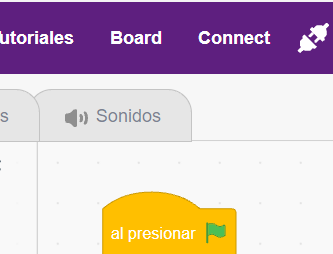 |
Conectamos nuestro PonchoBot al puerto USB y luego, en Pictoblox hacemos clic sobre la opción de menú Board , para seleccionar la placa Arduino Nano. Debemos también seleccionar el puerto COM correspondiente (en este caso COM6 (wch.cn)), haciendo clic en el botón Conectar.
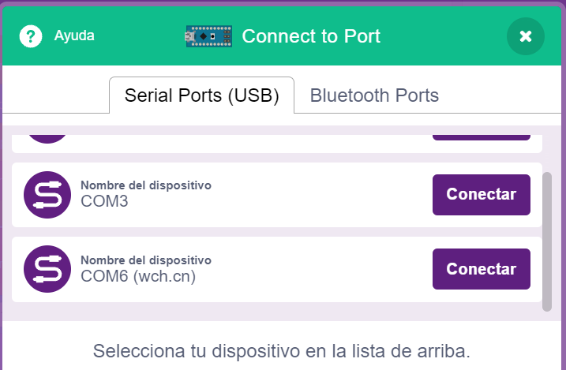 |
| 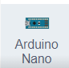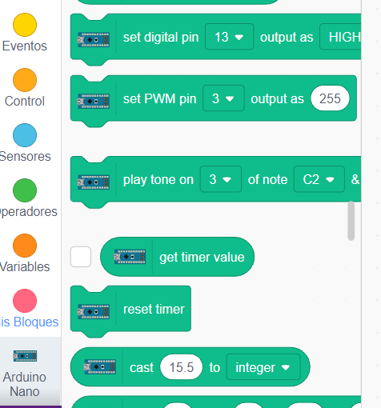 |
Dentro de la categoría Arduino Nano tenemos los bloques que permiten programar nuestro PonchoBot. 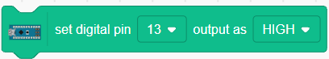Como el pin digital 13 se debe prender únicamente cuando Tobi esté tocando el borde, debemos recurrir a una estructura de control si <...> entonces , dentro de la categoría Control. El hueco entre si y entonces lo llenamos con la condición lógica correspondiente, en nuestro caso: ¿tocando el borde? ubicado dentro de la categoría Sensores (se debe cambiar el puntero del ratón por el borde) 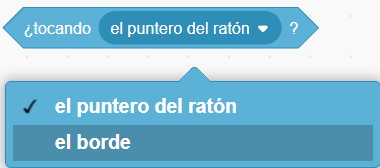 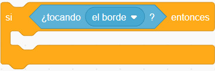
En la boca de la estructura si < ¿tocando el borde? > entonces vamos a arrastrar el bloque de la categoría Arduino Nano para programar el blink (prender y apagar el led), teniendo cuidado de cambiar en el segundo bloque el valor de HIGH por LOW 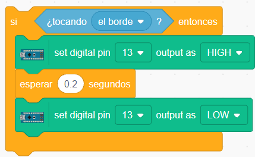 |
|
Al agregar los bloques para encender y apagar el led conectado al pin digital 13, dentro de nuestro bloque definir ir y venir , nos debe quedar así: 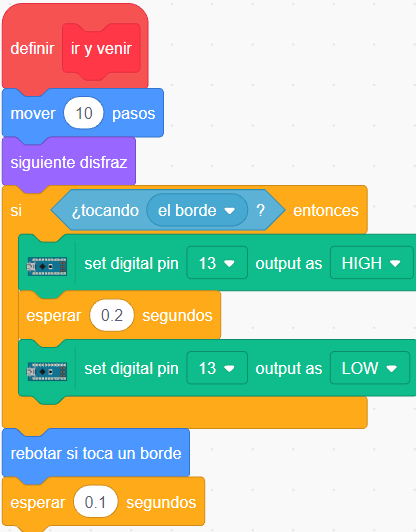 Notar que el bloque rebotar si toca un borde debe estar después de la estructura si < ¿tocando el borde? > entonces porque sino la condición de ¿tocando el borde? nunca se cumplirá, ya que previamente le dijimos a Tobi que rebote (deje de tocar el borde). |
|
| 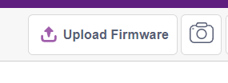 |
Lo único que resta es subir la programación a la placa con el botón Upload Firmaware y luego ejecutar presionando en la banderita verde. Importante: NO desenchufar el cable USB que conecta Arduino Nano con nuestra PC. 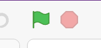 |

Podemos también crear un bloque para el blink, obteniendo un programa más organizado y entendible. El programa con esta modificación nos quedaría así:
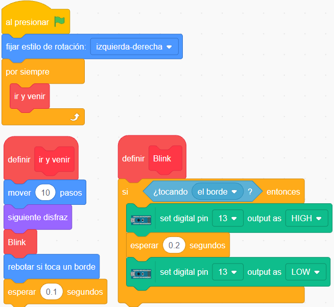